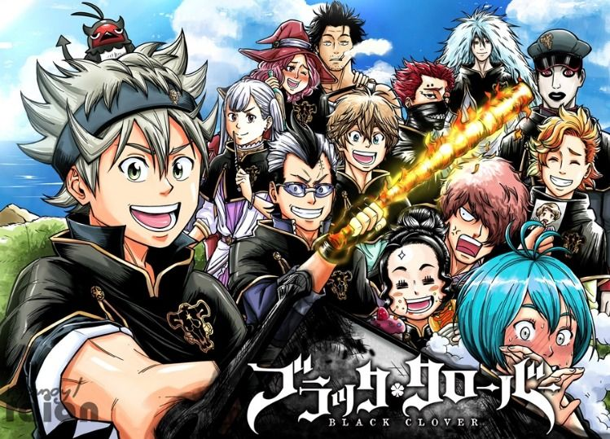

Black Clover is a Japanese manga series written and illustrated by Yūki Tabata. The story centers around Asta, a young boy seemingly born without any magic power, something that is unknown in the world he lives in. With his fellow mages from the Black Bulls, Asta plans to become the next Wizard King. It has been serialized in Shueisha's Weekly Shōnen Jump magazine since February 2015, and has been collected into 25 tankōbon volumes as of July 2020. The manga has been adapted into an original video animation produced by Xebec Zwei, which was released in 2017, as well an anime television series produced by Pierrot, which also premiered in Japan in October 2017. The manga series has been licensed for an English language release in North America by Viz Media, while the anime series is licensed by Crunchyroll and Funimation. An original video animation produced by Xebec Zwei that is based on the series was shown at the 2016 Jump Festa between November 27 and December 18, 2016.[17][18][19] It was bundled with the 11th volume of the manga, which was released on May 2, 2017.[20] A second original video animation was shown at the 2018 Jump Festa.[21] It was later released on DVD releases alongside My Hero Academia and Food Wars! Shokugeki no Soma bundled with the future volumes of their respective manga, as it was announced on Jump Special Anime Festa event.[22] At the Black Clover Jump Festa event on December 18, 2016, an anime television series adaptation by Pierrot was announced.[20] It is directed by Tatsuya Yoshihara, with Kazuyuki Fudeyasu writing scripts, Itsuko Takeda doing character designs, and Minako Seki composing the music.[23] The series premiered on October 3, 2017,[24][25] with the first two seasons each consisted of 51 episodes.[26][27] Season 3 premiered on October 1, 2019.[28] Crunchyroll is simulcasting the series,[29] while Funimation is producing an English dub as part of its Simuldub program as it airs.[30][31] Adult Swim's Toonami programming block premiered the English dub on December 2, 2017.[32] Sony Pictures UK and Funimation released the first part of the series on home video in the United Kingdom and Ireland,[33] with subsequent parts released by Manga Entertainment.[34] Universal Sony classified the first part of the series for release in Australia and New Zealand, on behalf of Funimation,[35] with Madman Entertainment releasing subsequent parts.[36] The anime has been broadcast without any major interruption until late April 2020, when it was announced that future episodes would be postponed based on studio production delays caused by the COVID-19 pandemic. The broadcasting and distribution of episode 133 onward was delayed and in its place, the first episode of the series was rebroadcast on May 5, 2020.[37] The series resumed on July 7, 2020.[38] A short original net animation titled Squishy! Black Clover (むぎゅっと！ブラッククローバー, Mugyutto! Burakku Kurōbā), produced by DLE and directed by Tsukasa Nishiyama, began airing on dTV on July 1, 2019. The opening theme song for the short is "POSSIBLE" by Gakuto Kajiwara and Nobunaga Shimazaki, under the name "Clover×Clover".[39] Crunchyroll made the short available internationally on December 31, 2019.[40]
